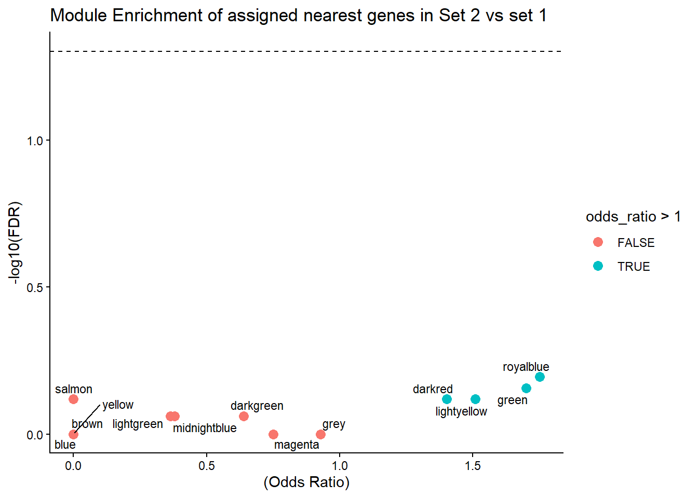
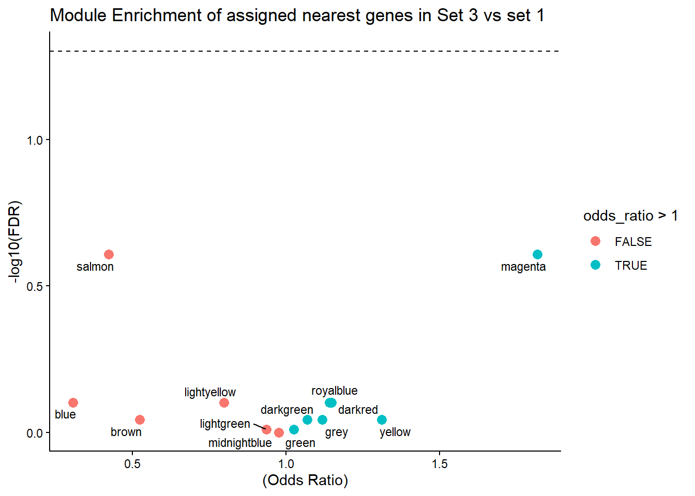

Protein_checks
Renee Matthews
2026-06-02
Last updated: 2026-06-02
Checks: 7 0
Knit directory: DXR_continue/
This reproducible R Markdown analysis was created with workflowr (version 1.7.2). The Checks tab describes the reproducibility checks that were applied when the results were created. The Past versions tab lists the development history.
Great! Since the R Markdown file has been committed to the Git repository, you know the exact version of the code that produced these results.
Great job! The global environment was empty. Objects defined in the global environment can affect the analysis in your R Markdown file in unknown ways. For reproduciblity it’s best to always run the code in an empty environment.
The command set.seed(20250701) was run prior to running
the code in the R Markdown file. Setting a seed ensures that any results
that rely on randomness, e.g. subsampling or permutations, are
reproducible.
Great job! Recording the operating system, R version, and package versions is critical for reproducibility.
Nice! There were no cached chunks for this analysis, so you can be confident that you successfully produced the results during this run.
Great job! Using relative paths to the files within your workflowr project makes it easier to run your code on other machines.
Great! You are using Git for version control. Tracking code development and connecting the code version to the results is critical for reproducibility.
The results in this page were generated with repository version 29a25f8. See the Past versions tab to see a history of the changes made to the R Markdown and HTML files.
Note that you need to be careful to ensure that all relevant files for
the analysis have been committed to Git prior to generating the results
(you can use wflow_publish or
wflow_git_commit). workflowr only checks the R Markdown
file, but you know if there are other scripts or data files that it
depends on. Below is the status of the Git repository when the results
were generated:
Ignored files:
Ignored: .Rhistory
Ignored: .Rproj.user/
Ignored: data/Bed_exports/
Ignored: data/Bed_exportsH3K27ac_summit_gr_ext200.bed
Ignored: data/Cormotif_data/
Ignored: data/DER_data/
Ignored: data/H3K27ac_MER61E_integrant_anno.RDS
Ignored: data/MER61intermediatemarking_protein.RDS
Ignored: data/Other_paper_data/
Ignored: data/RDS_files/
Ignored: data/TE_annotation/
Ignored: data/alignment_summary.txt
Ignored: data/all_peak_final_dataframe.txt
Ignored: data/cell_line_info_.tsv
Ignored: data/full_p53_canonical.RDS
Ignored: data/full_summary_QC_metrics.txt
Ignored: data/motif_lists/
Ignored: data/number_frag_peaks_summary.txt
Ignored: data/p53halfsite_TE_ids.RDS
Untracked files:
Untracked: H3K27ac_all_regions_test.bed
Untracked: H3K27ac_consensus_clusters_test.bed
Untracked: MER61C_ERV1_LTR.fa
Untracked: analysis/GREAT_H3K27ac.Rmd
Untracked: analysis/H3K27ac_ChromHMM_FC.Rmd
Untracked: analysis/H3K27ac_KZFP_motifs.Rmd
Untracked: analysis/H3K27ac_TE_investigation_200bp.Rmd
Untracked: analysis/H3K27me3_TE_investigation.Rmd
Untracked: analysis/H3K36me3_TE_investigation.Rmd
Untracked: analysis/LFC_regions_with_TEs.Rmd
Untracked: analysis/Top2a_Top2b_expression.Rmd
Untracked: analysis/drill_down_KZFPs.Rmd
Untracked: analysis/maps_and_plots.Rmd
Untracked: analysis/proteomics.Rmd
Untracked: code/For_john.R
Untracked: other_analysis/
Unstaged changes:
Modified: analysis/H3K27me3_TE_overlap_extend.Rmd
Modified: analysis/chromHMM_2.Rmd
Note that any generated files, e.g. HTML, png, CSS, etc., are not included in this status report because it is ok for generated content to have uncommitted changes.
These are the previous versions of the repository in which changes were
made to the R Markdown (analysis/protein_checks.Rmd) and
HTML (docs/protein_checks.html) files. If you’ve configured
a remote Git repository (see ?wflow_git_remote), click on
the hyperlinks in the table below to view the files as they were in that
past version.
| File | Version | Author | Date | Message |
|---|---|---|---|---|
| Rmd | 29a25f8 | reneeisnowhere | 2026-06-02 | wflow_publish("analysis/protein_checks.Rmd") |
| html | 2f4f37b | reneeisnowhere | 2026-05-22 | Build site. |
| Rmd | 3148f03 | reneeisnowhere | 2026-05-22 | wflow_publish("analysis/protein_checks.Rmd") |
| html | 6eb8dd5 | reneeisnowhere | 2026-05-15 | Build site. |
| Rmd | d21b8e1 | reneeisnowhere | 2026-05-15 | wflow_publish("analysis/protein_checks.Rmd") |
| html | 01c733f | reneeisnowhere | 2026-05-15 | Build site. |
| Rmd | 262843e | reneeisnowhere | 2026-05-15 | wflow_publish("analysis/protein_checks.Rmd") |
| html | afe0d0b | reneeisnowhere | 2026-05-15 | Build site. |
| Rmd | a3be13a | reneeisnowhere | 2026-05-15 | wflow_publish("analysis/protein_checks.Rmd") |
| html | ddce890 | reneeisnowhere | 2026-05-15 | Build site. |
| html | a0f5e3d | reneeisnowhere | 2026-05-14 | Build site. |
| Rmd | f318257 | reneeisnowhere | 2026-05-14 | wflow_publish("analysis/protein_checks.Rmd") |
| Rmd | 18bbad2 | reneeisnowhere | 2026-05-11 | wflow_git_commit(c("analysis/H3K27_TE_overlap_extend.Rmd", "analysis/H3K27ac_TE_investigation.Rmd", |
| Rmd | 1b0928c | reneeisnowhere | 2026-05-05 | wflow_git_commit("analysis/protein_checks.Rmd") |
library(tidyverse)
library(GenomicRanges)
library(plyranges)
library(genomation)
library(readr)
library(rtracklayer)
library(stringr)
library(ggrepel)
library(DT)
library(readxl)
library(biomaRt)
library(ggpubr)
library(httr)
library(jsonlite)
library(org.Hs.eg.db)
library(AnnotationDbi)
library(MASS)
library(GenomicFeatures)
library(TxDb.Hsapiens.UCSC.hg38.knownGene)
library(JASPAR2024)
library(TFBSTools)
library(universalmotif)From: Johnson O, Paul S, Gutiérrez J … DNA-damage-associated protein co-expression network in cardiomyocytes informs on tolerance to genetic variation and disease iScience, 2025; 28
mmc3 <- read_excel("C:/Users/renee/Documents/Ward Lab/AC_proteomics/proteins/mmc3.xlsx", skip = 1) %>%
dplyr::select(Protein:Is_CVD_PPI_protein)
write.table(mmc3,"data/Other_paper_data/protein_LFC_Johnson_2025.tsv",sep = "\t",
quote = FALSE,
row.names = FALSE)pulling data
protein_data <- read.delim("data/Other_paper_data/protein_LFC_Johnson_2025.tsv")
KZFP_2026_list <- read_excel("data/Other_paper_data/human_protein_coding_KZFPs_Davis_natgen_2026.xlsx")
# ids <- as.character(protein_data$Protein)
# ids <- trimws(ids)
map <- readRDS( "data/RDS_files/uniprot_map.rds")
map_clean <- map %>%
group_by(Entry) %>%
summarise(
gene = sub(" .*", "", Gene.Names),
.groups = "drop"
)
H3K27ac_ext200_anno <- readRDS("data/TE_annotation/annotated_H3K27ac_ext200_TE_overlaps.RDS")
remap <- AnnotationDbi::select(org.Hs.eg.db,
keys = protein_data$Protein, # your UniProt IDs
keytype = "UNIPROT",
columns = c("SYMBOL", "ENTREZID"))
remap_clean <- remap %>%
dplyr::group_by(UNIPROT) %>%
dplyr::summarise(
SYMBOL = dplyr::first(na.omit(SYMBOL)),
ENTREZID = dplyr::first(na.omit(ENTREZID)),
.groups = "drop")
ext200_anno_map <- AnnotationDbi::select(org.Hs.eg.db,
keys=H3K27ac_ext200_anno$geneId,
keytype = "ENTREZID",
columns = c("SYMBOL","UNIPROT")) %>%
distinct()
Module_lookup <- protein_data %>%
mutate(greek_module=case_when(Module=="green"~"alpha",
Module=="darkgreen"~"beta",
Module=="midnightblue"~"gamma",
Module=="salmon"~"delta",
Module=="lightyellow"~"epsilon",
Module=="lightgreen"~"zeta",
Module=="blue"~"eta",
Module=="magenta"~"theta",
Module=="darkred"~"iota",
Module=="brown"~"kappa",
Module=="yellow"~"lambda",
Module=="royalblue"~"mu",
Module=="grey"~"Unassigned")) %>%
dplyr::select(Module,greek_module) %>%
distinct()
alpha <- "\u03B1" # α
beta <- "\u03B2" # β
gamma <- "\u03B3" # γ
delta <- "\u03B4" # δ
epsilon <- "\u03B5" # ε
zeta <- "\u03B6" # ζ
eta <- "\u03B7" # η
theta <- "\u03B8" # θ
iota <- "\u03B9" # ι
kappa <- "\u03BA" # κ
lambda <- "\u03BB" # λ
mu <- "\u03BC" # μ# human_kzfp <-
# KZFP_2017_list %>%
# dplyr::filter(Species == "Homo_sapiens.GRCh38") %>%
# dplyr::select(Label:strand) %>%
# dplyr::filter(Type=="protein_coding") %>%
# distinct(Label,.keep_all = TRUE)
mart <- useMart("ensembl", dataset = "hsapiens_gene_ensembl",host = "useast.ensembl.org")
listAttributes(mart)
results <- getBM(attributes = c("uniprotswissprot", "hgnc_symbol", "entrezgene_id"),
filters = "uniprotswissprot",
values = protein_data$Protein,
mart = mart)
other_protein_id <- getBM(attributes = c("uniprotswissprot", "hgnc_symbol", "entrezgene_id", "ensembl_gene_id"),
filters = "ensembl_gene_id",
values = KZFP_2026_list$`Gene ID`,
mart = mart)
kzfp_uniprot <- other_protein_id %>%
dplyr::filter(uniprotswissprot!="")
protein_lookup_table <- results %>%
###only keeping protein if has an hgnc_cymbol and entrezid, but keeping the first entrez_id per uniprot id
filter(!is.na(entrezgene_id)| hgnc_symbol != "") %>%
group_by(uniprotswissprot) %>%
slice(1) %>%
ungroup()
KZFP_targets <- read_excel("data/Other_paper_data/KZFP_primary_targests_Supplemental_Table_S3.xlsx", sheet = "Primary_targets")url <- "https://rest.uniprot.org/uniprotkb/stream?format=tsv&fields=accession,gene_names&query=organism_id:9606"
map <- read.delim(url)
test <- merge(protein_data, map, by.x = "Protein", by.y = "Entry", all.x = TRUE)
saveRDS(map, "data/RDS_files/uniprot_map.rds")I am going to check for enrichment of Set 1 Set 2 and Set 3 in the gene groupings of Protein. First I need to create a list of entrezIDs for each set. They will have Entrezid, Peakid, cluster for looking up purposes. I will also make a set of genes for each cluster and a “background” gene-i-verse.
Set1_H3K27ac_lookup <- H3K27ac_ext200_anno %>%
dplyr::select(Peakid,cluster, geneId,distanceToTSS) %>%
dplyr::filter(cluster=="Set_1")
set1_genes <- H3K27ac_ext200_anno %>%
dplyr::filter(cluster =="Set_1") %>%
dplyr::pull(geneId) %>%
unique()
Set2_H3K27ac_lookup <- H3K27ac_ext200_anno %>%
dplyr::select(Peakid,cluster, geneId,distanceToTSS) %>%
dplyr::filter(cluster=="Set_2")
set2_genes <- H3K27ac_ext200_anno %>%
dplyr::filter(cluster =="Set_2") %>%
dplyr::pull(geneId) %>%
unique()
Set3_H3K27ac_lookup <- H3K27ac_ext200_anno %>%
dplyr::select(Peakid,cluster, geneId,distanceToTSS) %>%
dplyr::filter(cluster=="Set_3")
set3_genes <- H3K27ac_ext200_anno %>%
dplyr::filter(cluster =="Set_3") %>%
dplyr::pull(geneId) %>%
unique()
background_genes <- unique(H3K27ac_ext200_anno$geneId)Next, I am going to take the protein list and cluster by each group:
module_ids<- merge(protein_data, remap_clean, by.x = "Protein", by.y = "UNIPROT", all.x = TRUE)
protein_module_split <- split(module_ids,module_ids$Module)
gene_universe <- intersect(module_ids$ENTREZID,H3K27ac_ext200_anno$geneId)
length(intersect(background_genes,gene_universe))[1] 3660# saveRDS(module_ids,"data/Other_paper_data/Protein_paper_assigned_lookup.RDS")Now I am going to iterate over the split list and for each module list get a count of module genes/overlaps and background counts and perform a Fisher test for general enrichment over background
Which modules are enriched in assigned genes of each set?
enrichment_results_2 <- lapply(names(protein_module_split), function(mod) {
mod_df <- protein_module_split[[mod]]
# module genes
mod_genes <- unique(mod_df$ENTREZID)
mod_genes <- mod_genes[!is.na(mod_genes)]
mod_genes <- intersect(mod_genes, background_genes)
# overlaps
in_set2 <- sum(mod_genes %in% set2_genes)
not_in_set2 <- length(mod_genes) - in_set2
# background universe constrained
bg_set2 <- sum(background_genes %in% set2_genes)
bg_not_set2 <- length(background_genes) - bg_set2
mat <- matrix(c(
in_set2,
not_in_set2,
bg_set2 - in_set2,
bg_not_set2 - not_in_set2
), nrow = 2,byrow = TRUE)
ft <- fisher.test(mat)
data.frame(
Module = mod,
pvalue = ft$p.value,
odds_ratio = unname(ft$estimate),
in_set2 = in_set2,
module_size = length(mod_genes)
)
})
enrichment_df_2 <- do.call(rbind, enrichment_results_2)
enrichment_df_2$FDR <- p.adjust(enrichment_df_2$pvalue, method = "BH")
enrichment_df_2 <-enrichment_df_2 %>%
left_join(Module_lookup)enrichment_results_3 <- lapply(names(protein_module_split), function(mod) {
mod_df <- protein_module_split[[mod]]
# module genes
mod_genes <- unique(mod_df$ENTREZID)
mod_genes <- mod_genes[!is.na(mod_genes)]
mod_genes <- intersect(mod_genes, background_genes)
# overlaps
in_set3 <- sum(mod_genes %in% set3_genes)
not_in_set3 <- length(mod_genes) - in_set3
# background universe constrained
bg_set3 <- sum(background_genes %in% set3_genes)
bg_not_set3 <- length(background_genes) - bg_set3
mat <- matrix(c(
in_set3,
not_in_set3,
bg_set3 - in_set3,
bg_not_set3 - not_in_set3
), nrow = 2,byrow = TRUE)
ft <- fisher.test(mat)
data.frame(
Module = mod,
pvalue = ft$p.value,
odds_ratio = unname(ft$estimate),
in_set3 = in_set3,
module_size = length(mod_genes)
)
})
enrichment_df_3 <- do.call(rbind, enrichment_results_3)
enrichment_df_3$FDR <- p.adjust(enrichment_df_3$pvalue, method = "BH")
enrichment_df_3 <-enrichment_df_3 %>%
left_join(Module_lookup)enrichment_results_1 <- lapply(names(protein_module_split), function(mod) {
mod_df <- protein_module_split[[mod]]
# module genes
mod_genes <- unique(mod_df$ENTREZID)
mod_genes <- mod_genes[!is.na(mod_genes)]
mod_genes <- intersect(mod_genes, background_genes)
# overlaps
in_set1 <- sum(mod_genes %in% set1_genes)
not_in_set1 <- length(mod_genes) - in_set1
# background universe constrained
bg_set1 <- sum(background_genes %in% set1_genes)
bg_not_set1 <- length(background_genes) - bg_set1
mat <- matrix(c(
in_set1,
not_in_set1,
bg_set1 - in_set1,
bg_not_set1 - not_in_set1
), nrow = 2,byrow = TRUE)
ft <- fisher.test(mat)
data.frame(
Module = mod,
pvalue = ft$p.value,
odds_ratio = unname(ft$estimate),
in_set1 = in_set1,
module_size = length(mod_genes)
)
})
enrichment_df_1 <- do.call(rbind, enrichment_results_1)
enrichment_df_1$FDR <- p.adjust(enrichment_df_1$pvalue, method = "BH")
enrichment_df_1 <-enrichment_df_1 %>%
left_join(Module_lookup)Plots of enrichment
ggplot(enrichment_df_1, aes(x=odds_ratio, -log10(FDR), label=greek_module))+
geom_point(aes(color = odds_ratio > 1), size = 3) +
# geom_text_repel(data = subset(SVA_results, FDR < 0.05)) +
geom_text_repel(size=3, max.overlaps = Inf)+
geom_hline(yintercept = -log10(0.05), linetype = "dashed") +
labs(
x = "(Odds Ratio)",
y = "-log10(FDR)",
title = "Module Enrichment of assigned nearest genes in Set 1"
) +
theme_classic()
ggplot(enrichment_df_2, aes(x=odds_ratio, -log10(FDR), label=greek_module))+
geom_point(aes(color = odds_ratio > 1), size = 3) +
# geom_text_repel(data = subset(SVA_results, FDR < 0.05)) +
geom_text_repel(size=3, max.overlaps = Inf)+
geom_hline(yintercept = -log10(0.05), linetype = "dashed") +
labs(
x = "(Odds Ratio)",
y = "-log10(FDR)",
title = "Module Enrichment of assigned nearest genes in Set 2"
) +
theme_classic()
ggplot(enrichment_df_3, aes(x=odds_ratio, -log10(FDR), label=greek_module))+
geom_point(aes(color = odds_ratio > 1), size = 3) +
# geom_text_repel(data = subset(SVA_results, FDR < 0.05)) +
geom_text_repel(size=3, max.overlaps = Inf)+
geom_hline(yintercept = -log10(0.05), linetype = "dashed") +
labs(
x = "(Odds Ratio)",
y = "-log10(FDR)",
title = "Module Enrichment of assigned nearest genes in Set 3"
) +
theme_classic()
now module enrichment in set 2 v set 1
bg_genes_2v1 <- union(set1_genes,set2_genes)
enrichment_results_2v1 <- lapply(names(protein_module_split), function(mod) {
mod_genes <- unique(protein_module_split[[mod]]$ENTREZID)
mod_genes <- mod_genes[!is.na(mod_genes)]
a <- sum(set2_genes %in% mod_genes)
b <- sum(set2_genes %in% bg_genes_2v1) - a
c <- sum(set1_genes %in% mod_genes)
d <- sum(set1_genes %in% bg_genes_2v1) - c
mat <- matrix(c(a, b, c, d), nrow = 2, byrow = TRUE)
ft <- fisher.test(mat)
data.frame(
Module = mod,
pvalue = ft$p.value,
odds_ratio = ft$estimate,
set2_in_module = a,
set1_in_module = c
)
})
enrichment_df_2v1 <- do.call(rbind, enrichment_results_2v1)
enrichment_df_2v1$FDR <- p.adjust(enrichment_df_2v1$pvalue, method = "BH")
enrichment_df_2v1 <-enrichment_df_2v1 %>%
left_join(Module_lookup)ggplot(enrichment_df_2v1, aes(x=odds_ratio, -log10(FDR), label=greek_module))+
geom_point(aes(color = odds_ratio > 1), size = 3) +
# geom_text_repel(data = subset(SVA_results, FDR < 0.05)) +
geom_text_repel(size=3, max.overlaps = Inf)+
geom_hline(yintercept = -log10(0.05), linetype = "dashed") +
labs(
x = "(Odds Ratio)",
y = "-log10(FDR)",
title = "Module Enrichment of assigned nearest genes in Set 2 vs set 1"
) +
theme_classic()
datatable(enrichment_df_2v1,options = list(
pageLength = 10,
scrollX = TRUE))now module enrichment in set 3 v set 1
bg_genes_3v1 <- union(set1_genes,set3_genes)
enrichment_results_3v1 <- lapply(names(protein_module_split), function(mod) {
mod_genes <- unique(protein_module_split[[mod]]$ENTREZID)
mod_genes <- mod_genes[!is.na(mod_genes)]
a <- sum(set3_genes %in% mod_genes)
b <- sum(set3_genes %in% bg_genes_3v1) - a
c <- sum(set1_genes %in% mod_genes)
d <- sum(set1_genes %in% bg_genes_3v1) - c
mat <- matrix(c(a, b, c, d), nrow = 2, byrow = TRUE)
ft <- fisher.test(mat)
data.frame(
Module = mod,
pvalue = ft$p.value,
odds_ratio = ft$estimate,
set3_in_module = a,
set1_in_module = c
)
})
enrichment_df_3v1 <- do.call(rbind, enrichment_results_3v1)
enrichment_df_3v1$FDR <- p.adjust(enrichment_df_3v1$pvalue, method = "BH")
enrichment_df_3v1 <-enrichment_df_3v1 %>%
left_join(Module_lookup)ggplot(enrichment_df_3v1, aes(x=odds_ratio, -log10(FDR), label=paste0(greek_module)))+
geom_point(aes(color = odds_ratio > 1), size = 3) +
# geom_text_repel(data = subset(SVA_results, FDR < 0.05)) +
geom_text_repel(size=3, max.overlaps = Inf)+
geom_hline(yintercept = -log10(0.05), linetype = "dashed") +
labs(
x = "(Odds Ratio)",
y = "-log10(FDR)",
title = "Module Enrichment of assigned nearest genes in Set 3 vs Set 1"
) +
theme_classic()
datatable(enrichment_df_3v1,options = list(
pageLength = 10,
scrollX = TRUE))does distance to TSS change enrichment?
set1_2kb_genes <- Set1_H3K27ac_lookup %>%
dplyr::filter(distanceToTSS<2000 & distanceToTSS>-2000) %>%
pull(geneId) %>%
unique()
set2_2kb_genes <- Set2_H3K27ac_lookup %>%
dplyr::filter(distanceToTSS<2000 & distanceToTSS>-2000) %>%
pull(geneId) %>%
unique()
set3_2kb_genes <- Set3_H3K27ac_lookup %>%
dplyr::filter(distanceToTSS<2000 & distanceToTSS>-2000) %>%
pull(geneId) %>%
unique()bg_2v1_2kb <- union(set1_2kb_genes, set2_2kb_genes)
enrichment_results_2v1_2kb <- lapply(names(protein_module_split), function(mod) {
mod_genes <- unique(protein_module_split[[mod]]$ENTREZID)
mod_genes <- mod_genes[!is.na(mod_genes)]
a <- sum(set2_2kb_genes %in% mod_genes)
b <- sum(set2_2kb_genes %in% bg_2v1_2kb) - a
c <- sum(set1_2kb_genes %in% mod_genes)
d <- sum(set1_2kb_genes %in% bg_2v1_2kb) - c
mat <- matrix(c(a, b, c, d), nrow = 2, byrow = TRUE)
ft <- fisher.test(mat)
data.frame(
Module = mod,
pvalue = ft$p.value,
odds_ratio = ft$estimate,
set3_in_module = a,
set1_in_module = c
)
})
enrichment_df_2v1_2kb <- do.call(rbind, enrichment_results_2v1_2kb)
enrichment_df_2v1_2kb$FDR <- p.adjust(enrichment_df_2v1_2kb$pvalue, method = "BH")
ggplot(enrichment_df_2v1_2kb, aes(x=odds_ratio, -log10(FDR), label=Module))+
geom_point(aes(color = odds_ratio > 1), size = 3) +
# geom_text_repel(data = subset(SVA_results, FDR < 0.05)) +
geom_text_repel(size=3, max.overlaps = Inf)+
geom_hline(yintercept = -log10(0.05), linetype = "dashed") +
labs(
x = "(Odds Ratio)",
y = "-log10(FDR)",
title = "Module Enrichment of assigned nearest genes in Set 2 vs set 1"
) +
theme_classic()
bg_3v1_2kb <- union(set1_2kb_genes, set3_2kb_genes)
enrichment_results_3v1_2kb <- lapply(names(protein_module_split), function(mod) {
mod_genes <- unique(protein_module_split[[mod]]$ENTREZID)
mod_genes <- mod_genes[!is.na(mod_genes)]
a <- sum(set3_2kb_genes %in% mod_genes)
b <- sum(set3_2kb_genes %in% bg_3v1_2kb) - a
c <- sum(set1_2kb_genes %in% mod_genes)
d <- sum(set1_2kb_genes %in% bg_3v1_2kb) - c
mat <- matrix(c(a, b, c, d), nrow = 2, byrow = TRUE)
ft <- fisher.test(mat)
data.frame(
Module = mod,
pvalue = ft$p.value,
odds_ratio = ft$estimate,
set3_in_module = a,
set1_in_module = c
)
})
enrichment_df_3v1_2kb <- do.call(rbind, enrichment_results_3v1_2kb)
enrichment_df_3v1_2kb$FDR <- p.adjust(enrichment_df_3v1_2kb$pvalue, method = "BH")
ggplot(enrichment_df_3v1_2kb, aes(x=odds_ratio, -log10(FDR), label=Module))+
geom_point(aes(color = odds_ratio > 1), size = 3) +
# geom_text_repel(data = subset(SVA_results, FDR < 0.05)) +
geom_text_repel(size=3, max.overlaps = Inf)+
geom_hline(yintercept = -log10(0.05), linetype = "dashed") +
labs(
x = "(Odds Ratio)",
y = "-log10(FDR)",
title = "Module Enrichment of assigned nearest genes in Set 3 vs set 1"
) +
theme_classic()
Frequency checks of Set 2 v Set 1
This section is to investigate the frequency of near-gene assignments of Proteins from Omar’s paper to my interested regions. Here I am taking into account region assignment totals in Set 2 vs Set 1. test will be number of regions in set2 assigned to protein data gene, number of regions in set 2 not assigned to protein data gene, compared to number of regions assigned to set1 vs not assigned to protein data gene in set 1.
more specifically I want to test if Set 2 regions are more frequently assigned to differentially abundant proteins than set 1 H3K27ac regions.
Protein_list <- module_ids %>%
dplyr::select(Protein, Module,Is_DA_at_adj.p, Is_DOXcorrelated, SYMBOL,ENTREZID)
Protein_list_clean <- Protein_list %>%
filter(!is.na(ENTREZID)) %>%
group_by(ENTREZID) %>%
summarise(
in_protein_data = TRUE,
SYMBOL = paste(unique(na.omit(SYMBOL)), collapse = ";"),
Protein = paste(unique(na.omit(Protein)), collapse = ";"),
Module = paste(unique(na.omit(Module)), collapse = ";"),
any_DA = any(Is_DA_at_adj.p, na.rm = TRUE),
any_DOXcorrelated = any(Is_DOXcorrelated, na.rm = TRUE),
.groups = "drop")
region_data <- H3K27ac_ext200_anno %>%
dplyr::select(Peakid, geneId, cluster) %>%
left_join(Protein_list_clean, by=c("geneId"="ENTREZID")) %>%
mutate(
any_DA = coalesce(any_DA, 0),
any_DOXcorrelated= coalesce(any_DOXcorrelated,0))
test_df <- region_data %>%
filter(cluster %in% c("Set_1", "Set_2")) %>%
mutate(
assigned_to_DA_protein = any_DA == 1)
a <- sum(test_df$cluster == "Set_2" & test_df$assigned_to_DA_protein)
b <- sum(test_df$cluster == "Set_2" & !test_df$assigned_to_DA_protein)
c <- sum(test_df$cluster == "Set_1" & test_df$assigned_to_DA_protein)
d <- sum(test_df$cluster == "Set_1" & !test_df$assigned_to_DA_protein)
tab <- matrix(
c(a, b, c, d),
nrow = 2,
byrow = TRUE
)
fisher.test(tab, alternative = "greater")
Fisher's Exact Test for Count Data
data: tab
p-value = 1
alternative hypothesis: true odds ratio is greater than 1
95 percent confidence interval:
0.1704471 Inf
sample estimates:
odds ratio
0.3151662 hmmm, nope not enriched. And for future reference, I did this for Set 3 and also did not find enrichment. similar to the tests on modules above.
DAP enrichment in 27ac sets
DAP_IDs <- protein_data %>%
dplyr::select(Protein,Module,logFC,P.Value.adj, Is_DA_at_adj.p) %>%
dplyr::filter(Is_DA_at_adj.p==1) %>%
left_join(remap_clean, by =c("Protein"="UNIPROT"))
nonDAP_IDs <- protein_data %>%
dplyr::select(Protein,Module,logFC,P.Value.adj, Is_DA_at_adj.p) %>%
dplyr::filter(Is_DA_at_adj.p!=1) %>%
left_join(remap_clean, by =c("Protein"="UNIPROT"))
a=sum(set2_genes%in%DAP_IDs$ENTREZID)
b=sum(!set2_genes%in% DAP_IDs$ENTREZID)
c=sum(set1_genes%in%DAP_IDs$ENTREZID)
d=sum(!set1_genes%in%DAP_IDs$ENTREZID)
tab <- matrix(
c(a, b, c, d),
nrow = 2,
byrow = TRUE
)
fisher.test(tab, alternative = "greater")
Fisher's Exact Test for Count Data
data: tab
p-value = 0.9565
alternative hypothesis: true odds ratio is greater than 1
95 percent confidence interval:
0.3315557 Inf
sample estimates:
odds ratio
0.6186144 a=sum(set3_genes%in%DAP_IDs$ENTREZID)
b=sum(!set3_genes%in% DAP_IDs$ENTREZID)
c=sum(set1_genes%in%DAP_IDs$ENTREZID)
d=sum(!set1_genes%in%DAP_IDs$ENTREZID)
tab <- matrix(
c(a, b, c, d),
nrow = 2,
byrow = TRUE)
fisher.test(tab, alternative = "greater")
Fisher's Exact Test for Count Data
data: tab
p-value = 0.1888
alternative hypothesis: true odds ratio is greater than 1
95 percent confidence interval:
0.8990394 Inf
sample estimates:
odds ratio
1.136255 Investigation of number of proteins in alpha
green_alpha <- module_ids %>%
dplyr::filter(Module=="green") %>%
pull(ENTREZID)
tibble(background_genes) %>%
mutate(is_alpha=background_genes%in% green_alpha,
is_set1=background_genes%in% set1_genes,
is_set2=background_genes%in% set2_genes,
is_set3=background_genes%in% set3_genes) %>%
group_by(is_alpha, is_set3) %>% tally# A tibble: 4 × 3
# Groups: is_alpha [2]
is_alpha is_set3 n
<lgl> <lgl> <int>
1 FALSE FALSE 18400
2 FALSE TRUE 4710
3 TRUE FALSE 380
4 TRUE TRUE 143set2vset1alpha_mat <- matrix(c(31,1234,516,21345),nrow=2,byrow = TRUE)
fisher.test(set2vset1alpha_mat)
Fisher's Exact Test for Count Data
data: set2vset1alpha_mat
p-value = 0.8488
alternative hypothesis: true odds ratio is not equal to 1
95 percent confidence interval:
0.6955706 1.5015131
sample estimates:
odds ratio
1.039195 set3vset1alpha_mat <- matrix(c(143,4710,516,21345),nrow=2,byrow = TRUE)
fisher.test(set3vset1alpha_mat)
Fisher's Exact Test for Count Data
data: set3vset1alpha_mat
p-value = 0.01862
alternative hypothesis: true odds ratio is not equal to 1
95 percent confidence interval:
1.033347 1.518640
sample estimates:
odds ratio
1.255907 set3vset2alpha_mat <- matrix(c(143,4710,31,1234),nrow=2,byrow = TRUE)
fisher.test(set3vset2alpha_mat)
Fisher's Exact Test for Count Data
data: set3vset2alpha_mat
p-value = 0.3928
alternative hypothesis: true odds ratio is not equal to 1
95 percent confidence interval:
0.8102937 1.8539155
sample estimates:
odds ratio
1.208523 MER61E specific tests
What about neargenes to MER61E? Are more DAPs associated with MER61E than MER61B?
MER61E_anno_genes <- readRDS("data/RDS_files/MER61E_anno_genes.RDS")
MER61B_anno_genes <- readRDS("data/RDS_files/MER61B_anno_genes.RDS")
MER61E_anno_genes %>%
mutate(is_DAP= ENTREZID %in% DAP_IDs$ENTREZID) %>%
group_by(cluster,is_DAP) %>%
count# A tibble: 4 × 3
# Groups: cluster, is_DAP [4]
cluster is_DAP n
<chr> <lgl> <int>
1 Set_1 FALSE 11
2 Set_3 FALSE 40
3 not_assigned FALSE 16
4 <NA> FALSE 200MER61B_anno_genes %>%
mutate(is_DAP= ENTREZID %in% DAP_IDs$ENTREZID) %>%
group_by(cluster,is_DAP) %>%
count# A tibble: 4 × 3
# Groups: cluster, is_DAP [4]
cluster is_DAP n
<chr> <lgl> <int>
1 Set_1 FALSE 5
2 not_assigned FALSE 3
3 <NA> FALSE 342
4 <NA> TRUE 5a_MERE=0
b_MERE_noDAP=267
c_MERB=5
d_MERB_noDAP=350
fisher.test(matrix(c(a_MERE,b_MERE_noDAP,c_MERB,d_MERB_noDAP),nrow=2,byrow = FALSE))
Fisher's Exact Test for Count Data
data: matrix(c(a_MERE, b_MERE_noDAP, c_MERB, d_MERB_noDAP), nrow = 2, byrow = FALSE)
p-value = 0.07409
alternative hypothesis: true odds ratio is not equal to 1
95 percent confidence interval:
0.000000 1.444495
sample estimates:
odds ratio
0 Well, disappointing that no MER61E assigned near genes overlap a DAP. (Assignment of neargenes was done by GREAT website app)
KZFP
just trying to see if KZFPs are in protein data.
protein_data %>%
dplyr::select(Protein,Module,logFC,P.Value.adj) %>%
left_join(remap_clean, by =c("Protein"="UNIPROT")) %>%
mutate(KZFP_group=case_when(SYMBOL %in%KZFP_2026_list$Label~"KZFP",
TRUE ~"not_KZFP")) %>%
ggplot(., aes(x=KZFP_group,y=logFC))+
geom_boxplot()+
stat_compare_means(method = "wilcox.test") +
theme_bw()+
ggtitle("LFC of KZFPs in protein data")
| Version | Author | Date |
|---|---|---|
| a0f5e3d | reneeisnowhere | 2026-05-14 |
protein_data %>%
dplyr::select(Protein,Module,logFC,P.Value.adj) %>%
left_join(remap_clean, by =c("Protein"="UNIPROT")) %>%
mutate(KZFP_group=case_when(SYMBOL %in%KZFP_2026_list$Label~"KZFP",
TRUE ~"not_KZFP")) %>%
group_by(KZFP_group) %>%
tally# A tibble: 1 × 2
KZFP_group n
<chr> <int>
1 not_KZFP 4178DAP enrichment
getting proteins that are DAP vs non-DAP
DAP_IDs <- protein_data %>%
dplyr::select(Protein,Module,logFC,P.Value.adj, Is_DA_at_adj.p) %>%
dplyr::filter(Is_DA_at_adj.p==1) %>%
left_join(remap_clean, by =c("Protein"="UNIPROT"))
nonDAP_IDs <- protein_data %>%
dplyr::select(Protein,Module,logFC,P.Value.adj, Is_DA_at_adj.p) %>%
dplyr::filter(Is_DA_at_adj.p!=1) %>%
left_join(remap_clean, by =c("Protein"="UNIPROT"))
Entrezid_protein_module <- protein_data %>%
dplyr::select(Protein,Module,logFC,P.Value.adj, Is_DA_at_adj.p) %>%
left_join(remap_clean, by =c("Protein"="UNIPROT")) %>%
dplyr::filter(!is.na(SYMBOL)) %>%
distinct(Module,ENTREZID,SYMBOL)
Entrezid_protein_module_unique <- Entrezid_protein_module%>%
group_by(SYMBOL) %>%
summarise(Module = dplyr::first(Module),
ENTREZID=dplyr::first(ENTREZID), .groups = "drop")asking are genes near mer61E_gr enriched in any module or in DAPs?
MER61E_mydata <-
H3K27ac_ext200_anno %>%
separate_longer_delim(cols=c(repClass,repFamily,repName,repID), delim = ";") %>%
dplyr::filter(repName=="MER61E")%>%
pull(repID) %>%
unique()
MER61E_mydata_set3 <- H3K27ac_ext200_anno %>%
separate_longer_delim(cols=c(repClass,repFamily,repName,repID), delim = ";") %>%
dplyr::filter(cluster=="Set_3") %>%
dplyr::filter(repName=="MER61E")%>%
pull(repID) %>%
unique()
mer61E_gr <- rtracklayer::import("data/Bed_exports/repeatmasker_sets/ERV1/MER61E_ERV1_LTR.bed")
# txdb annotation
txdb <- TxDb.Hsapiens.UCSC.hg38.knownGene
# gene coordinates
genes_gr <- genes(txdb)
# nearest gene index
nearest_idx <- nearest(mer61E_gr, genes_gr)
# nearest gene IDs
nearest_entrez <- genes_gr$gene_id[nearest_idx]
# add to MER61E object
mcols(mer61E_gr)$nearest_gene <- nearest_entrez
distances <- distance(mer61E_gr, genes_gr[nearest_idx])
mcols(mer61E_gr)$distance_to_gene <- distances
## getting the dataframe of nearest genes in and out of my data for counting:
mer61E_gr %>%
as.data.frame() %>%
mutate(my_MER=if_else(name %in%MER61E_mydata,"in","out")) %>%
ggplot(aes(x=distance_to_gene, color=my_MER))+
geom_density()
mer61E_gr %>%
as.data.frame() %>%
mutate(my_MER=if_else(name %in%MER61E_mydata,"in","out")) %>%
mutate(is_DAP=if_else(nearest_gene%in%DAP_IDs$ENTREZID,"DAP","not_DAP")) %>%
left_join(Entrezid_protein_module_unique, by=c("nearest_gene"="ENTREZID")) %>%
mutate(DOX_cor= if_else(Module %in% c("green","lightyellow","salmon","darkgreen","midnightblue"),"DOXcor","non_DOXcor")) %>%
group_by(my_MER, DOX_cor) %>% tally# A tibble: 4 × 3
# Groups: my_MER [2]
my_MER DOX_cor n
<chr> <chr> <int>
1 in DOXcor 3
2 in non_DOXcor 64
3 out DOXcor 10
4 out non_DOXcor 190my_matrix <- matrix(c(3,64,10,190), nrow = 2, byrow = TRUE)
fisher.test(my_matrix)
Fisher's Exact Test for Count Data
data: my_matrix
p-value = 1
alternative hypothesis: true odds ratio is not equal to 1
95 percent confidence interval:
0.1528659 3.6051195
sample estimates:
odds ratio
0.891003 repID_to_gene_MER61E <- read_delim("data/Other_paper_data/repID_to_gene_MER61E.txt",
delim = "\t", escape_double = FALSE,
col_names = FALSE, trim_ws = TRUE, skip = 1)
repID_to_gene_MER61E$closest_gene <- vapply(repID_to_gene_MER61E$X2, function(x){
# handle missing/empty
if (is.na(x) || x == "") {
return(NA_character_)
}
# split entries
parts <- str_split(x, ",\\s*")[[1]]
# extract distances
dists <- as.numeric(str_extract(parts, "[+-]\\d+"))
# extract genes
genes <- str_extract(parts, "^[^ ]+")
# remove failed parses
keep <- !is.na(dists) & !is.na(genes)
dists <- dists[keep]
genes <- genes[keep]
# if nothing valid remains
if (length(genes) == 0) {
return(NA_character_)
}
# closest gene
genes[which.min(abs(dists))]
},
FUN.VALUE = character(1))
# save_MER <-
repID_to_gene_MER61E %>%
filter(!is.na(closest_gene)) %>%
mutate(my_MER=if_else(X1 %in%MER61E_mydata,"in","out")) %>%
mutate(is_DAP=if_else(closest_gene%in%DAP_IDs$SYMBOL,"DAP","not_DAP")) %>%
left_join(Entrezid_protein_module_unique, by=c("closest_gene"="SYMBOL")) %>%
mutate(DOX_cor= if_else(Module %in% c("green","lightyellow","salmon","darkgreen","midnightblue"),"DOXcor","non_DOXcor")) %>%
group_by(my_MER,DOX_cor) %>%
tally# A tibble: 4 × 3
# Groups: my_MER [2]
my_MER DOX_cor n
<chr> <chr> <int>
1 in DOXcor 5
2 in non_DOXcor 56
3 out DOXcor 17
4 out non_DOXcor 161great_matrix <- matrix(c(5,56,17,161), nrow = 2, byrow = TRUE)
fisher.test(great_matrix)
Fisher's Exact Test for Count Data
data: great_matrix
p-value = 1
alternative hypothesis: true odds ratio is not equal to 1
95 percent confidence interval:
0.2331645 2.5357573
sample estimates:
odds ratio
0.8461691 # table(table(repID_to_gene_MER61E$closest_gene))
# table(repID_to_gene_MER61E$closest_gene, useNA = "ifany")
# saveRDS(save_MER,"data/MER61intermediatemarking_protein.RDS")repID_to_gene_MER61E %>%
filter(!is.na(closest_gene)) %>%
mutate(my_MER=if_else(X1 %in%MER61E_mydata_set3,"in","out")) %>%
mutate(is_DAP=if_else(closest_gene%in%DAP_IDs$SYMBOL,"DAP","not_DAP")) %>%
left_join(Entrezid_protein_module_unique, by=c("closest_gene"="SYMBOL")) %>%
mutate(DOX_cor= if_else(Module %in% c("green","lightyellow","salmon","darkgreen","midnightblue"),"DOXcor","non_DOXcor")) %>%
group_by(my_MER,DOX_cor) %>%
tally# A tibble: 4 × 3
# Groups: my_MER [2]
my_MER DOX_cor n
<chr> <chr> <int>
1 in DOXcor 3
2 in non_DOXcor 34
3 out DOXcor 19
4 out non_DOXcor 183great_matrix_set3 <- matrix(c(3,34,19,183), nrow = 2,byrow = TRUE)
fisher.test(great_matrix_set3)
Fisher's Exact Test for Count Data
data: great_matrix_set3
p-value = 1
alternative hypothesis: true odds ratio is not equal to 1
95 percent confidence interval:
0.1528595 3.1303576
sample estimates:
odds ratio
0.8503987 Looking at TF motif/protein enrichment
H3K27ac_Set2_data <- readRDS("data/RDS_files/H3K27ac_Set2_enrmotif_data.RDS")
H3K27ac_Set3_data <- readRDS("data/RDS_files/H3K27ac_Set3_enrmotif_data.RDS")
## TF universe
# jaspar2024 <- JASPAR2024::JASPAR2024()
# opts <- list(
# collection = "CORE",
# tax_group = "vertebrates",
# species = 9606,
# all_versions = FALSE
# )
#
# pfm_list <- TFBSTools::getMatrixSet(jaspar2024, opts)
# tf_names <- sapply(pfm_list, name)
motif_names_set2H3K27ac <-
H3K27ac_Set2_data %>%
dplyr::filter(str_starts(pattern = "MA",string=ID)) %>%
dplyr::select(motif_name) %>%
mutate(TF_split=str_split(motif_name,"::")) %>%
unnest(TF_split) %>%
mutate(motif_name2=toupper(TF_split)) %>%
mutate(is_DAP_comp=motif_name2 %in%Entrezid_protein_module_unique$SYMBOL) %>%
group_by(motif_name) %>%
summarise(
DAP = if_else(any(is_DAP_comp), "DAP", "non_DAP"),
.groups = "drop"
) %>%
mutate(motif_name=toupper(motif_name)) %>%
distinct()
motif_names_set3H3K27ac <- H3K27ac_Set3_data %>%
dplyr::filter(str_starts(pattern = "MA",string=ID)) %>%
dplyr::select(motif_name) %>%
mutate(TF_split=str_split(motif_name,"::")) %>%
unnest(TF_split) %>%
mutate(motif_name2=toupper(TF_split)) %>%
mutate(is_DAP_comp=motif_name2 %in%Entrezid_protein_module_unique$SYMBOL) %>%
group_by(motif_name) %>%
summarise(
DAP = if_else(any(is_DAP_comp), "DAP", "non_DAP"),
.groups = "drop"
) %>%
mutate(motif_name=toupper(motif_name)) %>%
distinct()
# motif_names_set2H3K27acUsing exact meme file of TFs for enrichment
motifs <- read_meme("data/Other_paper_data/JASPAR2024_CORE_vertebrates_non-redundant_v2.meme")
### pulling the alt_name from each element (841 elements)
tf_names <- sapply(motifs, function(x) x@altname)
### no making the totupper and removing the redundant names (those that are not human are lowercase but maybe the same, ie.LHX1, Lhx1) This leaves 779 total
tf_names <- tf_names %>%
toupper() %>%
unique()
H3K27ac_TF_df <- tibble(tf_names) %>%
mutate(TF_split=str_split(tf_names,"::")) %>%
unnest(TF_split) %>%
mutate(is_DAP_comp=TF_split %in%Entrezid_protein_module_unique$SYMBOL) %>%
group_by(tf_names) %>%
summarise(
DAP = if_else(any(is_DAP_comp), "DAP", "non_DAP"),
.groups = "drop"
) %>%
mutate(Set_2=if_else(tf_names %in% motif_names_set2H3K27ac$motif_name,"yes","no"),
Set_3=if_else(tf_names %in% motif_names_set3H3K27ac$motif_name,"yes","no")) %>%
mutate(
DAP = factor(DAP, levels = c("DAP", "non_DAP")),
Set_2 = factor(Set_2, levels = c("yes", "no")),
Set_3 = factor(Set_3, levels = c("yes", "no"))) %>%
mutate(
set_group = case_when(
Set_2 == "yes" & Set_3 == "yes" ~ "shared",
Set_2 == "yes" & Set_3 == "no" ~ "set_2_only",
Set_2 == "no" & Set_3 == "yes" ~ "set_3_only",
TRUE ~ "neither"))
tf_matrix_set2 <- table(H3K27ac_TF_df$DAP, H3K27ac_TF_df$Set_2)
fisher.test(tf_matrix_set2)
Fisher's Exact Test for Count Data
data: tf_matrix_set2
p-value = 1
alternative hypothesis: true odds ratio is not equal to 1
95 percent confidence interval:
0.4132031 2.0892791
sample estimates:
odds ratio
0.9474239 tf_matrix_set3 <- table(H3K27ac_TF_df$DAP, H3K27ac_TF_df$Set_3)
fisher.test(tf_matrix_set3)
Fisher's Exact Test for Count Data
data: tf_matrix_set3
p-value = 0.1098
alternative hypothesis: true odds ratio is not equal to 1
95 percent confidence interval:
0.7592585 6.0901316
sample estimates:
odds ratio
2.33746 almost set3, good odds ratio but not significant with a pvalue=0.1075.
Now I will test if the unique to Set 3, unique to Set 2, or shared TFs are enriched in DAPs vs non-DAPs
table(H3K27ac_TF_df$DAP,H3K27ac_TF_df$set_group=="set_2_only")
FALSE TRUE
DAP 19 12
non_DAP 512 273tf_uni_matrix_set2 <- matrix(c(11,19,262,487), nrow = 2,byrow = TRUE)
fisher.test(tf_uni_matrix_set2)
Fisher's Exact Test for Count Data
data: tf_uni_matrix_set2
p-value = 0.8471
alternative hypothesis: true odds ratio is not equal to 1
95 percent confidence interval:
0.4552911 2.4214519
sample estimates:
odds ratio
1.076031 table(H3K27ac_TF_df$DAP,H3K27ac_TF_df$set_group=="set_3_only")
FALSE TRUE
DAP 25 6
non_DAP 753 32tf_uni_matrix_set3 <- matrix(c(6,24,30,719), nrow = 2, byrow = TRUE)
fisher.test(tf_uni_matrix_set3)
Fisher's Exact Test for Count Data
data: tf_uni_matrix_set3
p-value = 0.001681
alternative hypothesis: true odds ratio is not equal to 1
95 percent confidence interval:
1.854957 16.498413
sample estimates:
odds ratio
5.963026 So we do know that the unique set 3 enriched TFs are also enriched in DAPs significantly.
table(H3K27ac_TF_df$DAP,H3K27ac_TF_df$set_group=="shared")
FALSE TRUE
DAP 31 0
non_DAP 744 41tf_uni_matrix_setshare <- matrix(c(0,30,41,708), nrow = 2)
fisher.test(tf_uni_matrix_setshare)
Fisher's Exact Test for Count Data
data: tf_uni_matrix_setshare
p-value = 0.397
alternative hypothesis: true odds ratio is not equal to 1
95 percent confidence interval:
0.000000 2.363431
sample estimates:
odds ratio
0 H3K9me3
H3K9me3_Set2_data <- readRDS("data/RDS_files/H3K9me3_Set2_enrmotif_data.RDS")
H3K9me3_Set3_data <- readRDS("data/RDS_files/H3K9me3_Set3_enrmotif_data.RDS")
motif_names_set2H3K9me3 <-
H3K9me3_Set2_data %>%
dplyr::filter(str_starts(pattern = "MA",string=ID)) %>%
dplyr::select(motif_name) %>%
mutate(TF_split=str_split(motif_name,"::")) %>%
unnest(TF_split) %>%
mutate(motif_name2=toupper(TF_split)) %>%
mutate(is_DAP_comp=motif_name2 %in%Entrezid_protein_module_unique$SYMBOL) %>%
group_by(motif_name) %>%
summarise(
DAP = if_else(any(is_DAP_comp), "DAP", "non_DAP"),
.groups = "drop"
) %>%
mutate(motif_name=toupper(motif_name)) %>%
distinct()
motif_names_set3H3K9me3 <- H3K9me3_Set3_data %>%
dplyr::filter(str_starts(pattern = "MA",string=ID)) %>%
dplyr::select(motif_name) %>%
mutate(TF_split=str_split(motif_name,"::")) %>%
unnest(TF_split) %>%
mutate(motif_name2=toupper(TF_split)) %>%
mutate(is_DAP_comp=motif_name2 %in%Entrezid_protein_module_unique$SYMBOL) %>%
group_by(motif_name) %>%
summarise(
DAP = if_else(any(is_DAP_comp), "DAP", "non_DAP"),
.groups = "drop"
) %>%
mutate(motif_name=toupper(motif_name)) %>%
distinct()
H3K9me3_marked_TF <- tibble(tf_names) %>%
mutate(TF_split=str_split(tf_names,"::")) %>%
unnest(TF_split) %>%
mutate(is_DAP_comp=TF_split %in%Entrezid_protein_module_unique$SYMBOL) %>%
group_by(tf_names) %>%
summarise(
DAP = if_else(any(is_DAP_comp), "DAP", "non_DAP"),
.groups = "drop"
) %>%
mutate(Set_2=if_else(tf_names %in% motif_names_set2H3K9me3$motif_name,"yes","no"),
Set_3=if_else(tf_names %in% motif_names_set3H3K9me3$motif_name,"yes","no")) %>%
mutate(
DAP = factor(DAP, levels = c("DAP", "non_DAP")),
Set_2 = factor(Set_2, levels = c("yes", "no")),
Set_3 = factor(Set_3, levels = c("yes", "no"))) %>%
mutate(
set_group = case_when(
Set_2 == "yes" & Set_3 == "yes" ~ "shared",
Set_2 == "yes" & Set_3 == "no" ~ "set_2_only",
Set_2 == "no" & Set_3 == "yes" ~ "set_3_only",
TRUE ~ "neither"))
table(H3K9me3_marked_TF$DAP,H3K9me3_marked_TF$Set_2)
yes no
DAP 5 26
non_DAP 229 556tf_matrix_set2_k9 <- table(H3K9me3_marked_TF$DAP,H3K9me3_marked_TF$Set_2)
fisher.test(tf_matrix_set2_k9)
Fisher's Exact Test for Count Data
data: tf_matrix_set2_k9
p-value = 0.1553
alternative hypothesis: true odds ratio is not equal to 1
95 percent confidence interval:
0.1384028 1.2573937
sample estimates:
odds ratio
0.4672792 table(H3K9me3_marked_TF$DAP,H3K9me3_marked_TF$Set_3)
yes no
DAP 4 27
non_DAP 195 590tf_matrix_set3_k9 <- table(H3K9me3_marked_TF$DAP,H3K9me3_marked_TF$Set_3)
fisher.test(tf_matrix_set3_k9)
Fisher's Exact Test for Count Data
data: tf_matrix_set3_k9
p-value = 0.1982
alternative hypothesis: true odds ratio is not equal to 1
95 percent confidence interval:
0.1126565 1.3104335
sample estimates:
odds ratio
0.4485869 now I will also check if acute/sus/shared enrichment
Acute:(set 2 in H3K9me3)
table(H3K9me3_marked_TF$DAP,H3K9me3_marked_TF$set_group=="set_2_only")
FALSE TRUE
DAP 30 1
non_DAP 739 46tf_uni_matrix_set2_k9 <- matrix(c(1,29,44,705), nrow = 2,byrow = TRUE)
fisher.test(tf_uni_matrix_set2_k9)
Fisher's Exact Test for Count Data
data: tf_uni_matrix_set2_k9
p-value = 1
alternative hypothesis: true odds ratio is not equal to 1
95 percent confidence interval:
0.01323388 3.50296494
sample estimates:
odds ratio
0.5528566 sustained in H3K9me3 (set 3)
table(H3K9me3_marked_TF$DAP,H3K9me3_marked_TF$set_group=="set_3_only")
FALSE TRUE
DAP 31 0
non_DAP 773 12tf_uni_matrix_set3_k9 <- matrix(c(0,30,12,737), nrow = 2,byrow = TRUE)
fisher.test(tf_uni_matrix_set3_k9)
Fisher's Exact Test for Count Data
data: tf_uni_matrix_set3_k9
p-value = 1
alternative hypothesis: true odds ratio is not equal to 1
95 percent confidence interval:
0.000000 9.321187
sample estimates:
odds ratio
0 table(H3K9me3_marked_TF$DAP,H3K9me3_marked_TF$set_group=="shared")
FALSE TRUE
DAP 27 4
non_DAP 602 183tf_uni_matrix_setshare_k9 <- matrix(c(4,26,169,580), nrow = 2,byrow = TRUE)
fisher.test(tf_uni_matrix_setshare_k9)
Fisher's Exact Test for Count Data
data: tf_uni_matrix_setshare_k9
p-value = 0.2716
alternative hypothesis: true odds ratio is not equal to 1
95 percent confidence interval:
0.1321486 1.5532997
sample estimates:
odds ratio
0.5283824 fisher test results
mat_list <- list("K27ac2"=tf_uni_matrix_set2,"K27ac3"=tf_uni_matrix_set3,"K27acshared"=tf_uni_matrix_setshare,"K9me32"=tf_uni_matrix_set2_k9,"K9me33"=tf_uni_matrix_set3_k9,"K9me3shared"=tf_uni_matrix_setshare_k9)
fisher_from_matrix <- function(mat, name = NA_character_, alternative = "greater") {
ft <- fisher.test(mat, alternative = alternative)
tibble(
name = name,
a = mat[1, 1],
b = mat[1, 2],
c = mat[2, 1],
d = mat[2, 2],
odds_ratio = unname(ft$estimate),
conf_low = ft$conf.int[1],
conf_high = ft$conf.int[2],
p_value = ft$p.value,
alternative = ft$alternative
)
}
fisher_results <- imap_dfr(
mat_list,
~ fisher_from_matrix(.x, name = .y, alternative = "two.sided")
) %>%
mutate(
FDR = p.adjust(p_value, method = "BH")
) kableExtra::kable(fisher_results) %>%
kableExtra::kable_paper("striped", full_width = FALSE) %>%
kableExtra::kable_styling(
full_width = FALSE,
position = "left",
bootstrap_options = c("striped", "hover")
) %>%
kableExtra::scroll_box(width = "100%", height = "400px")| name | a | b | c | d | odds_ratio | conf_low | conf_high | p_value | alternative | FDR |
|---|---|---|---|---|---|---|---|---|---|---|
| K27ac2 | 11 | 19 | 262 | 487 | 1.0760313 | 0.4552911 | 2.421452 | 0.8471461 | two.sided | 1.0000000 |
| K27ac3 | 6 | 24 | 30 | 719 | 5.9630257 | 1.8549571 | 16.498413 | 0.0016809 | two.sided | 0.0100855 |
| K27acshared | 0 | 41 | 30 | 708 | 0.0000000 | 0.0000000 | 2.363431 | 0.3969903 | two.sided | 0.7939807 |
| K9me32 | 1 | 29 | 44 | 705 | 0.5528566 | 0.0132339 | 3.502965 | 1.0000000 | two.sided | 1.0000000 |
| K9me33 | 0 | 30 | 12 | 737 | 0.0000000 | 0.0000000 | 9.321187 | 1.0000000 | two.sided | 1.0000000 |
| K9me3shared | 4 | 26 | 169 | 580 | 0.5283824 | 0.1321486 | 1.553300 | 0.2716028 | two.sided | 0.7939807 |
TF_Information <- read_delim("C:/Users/renee/Downloads/F135_3.00_2026_04_10_5_41_pm_allC2H2ZFs/TF_Information.txt",
delim = "\t", escape_double = FALSE,
trim_ws = TRUE)
kzpf_motif_IDs <- TF_Information %>%
dplyr::filter(TF_Species=="Homo_sapiens") %>%
dplyr::filter(TF_Name %in%KZFP_2026_list$Label) %>%
dplyr::filter(Motif_ID != ".") %>%
pull(Motif_ID)
TF_Information %>%
filter(TF_Species == "Homo_sapiens") %>%
filter(TF_Name %in% KZFP_2026_list$Label) %>%
summarise(
total = dplyr::n(),
with_motif = sum(Motif_ID != "."),
missing = sum(Motif_ID == ".")
)
KZFP_motif_info <- TF_Information %>%
filter(TF_Species == "Homo_sapiens") %>%
filter(TF_Name %in% KZFP_2026_list$Label) %>%
dplyr::filter(Motif_ID != ".")
# saveRDS(KZFP_motif_info,"data/RDS_files/KZFP_motif_info.RDS")
KZFP_no_motif_list <-
TF_Information %>%
filter(TF_Species == "Homo_sapiens") %>%
filter(TF_Name %in% KZFP_2026_list$Label) %>%
filter(Motif_ID == ".") %>%
pull(TF_Name)
KZFP_no_motif_list
files <- list.files(
"C:/Users/renee/Downloads/F135_3.00_2026_04_10_5_41_pm_allC2H2ZFs/pwms",
full.names = TRUE)
file_ids <- tools::file_path_sans_ext(basename(files))
meta <- TF_Information %>%
dplyr::filter(TF_Species == "Homo_sapiens") %>%
dplyr::filter(TF_Name %in% KZFP_2026_list$Label) %>%
dplyr::filter(Motif_ID != ".") %>%
dplyr::select(Motif_ID, TF_Name)
motif_files <- files[file_ids %in% kzpf_motif_IDs]
motif_names <- tools::file_path_sans_ext(basename(motif_files))
alt_ids <- meta$TF_Name[match(motif_names, meta$Motif_ID)]
length(kzpf_motif_IDs)
length(motif_files)
setdiff(kzpf_motif_IDs,
tools::file_path_sans_ext(basename(files)))
library(universalmotif)
get_tf_name <- function(x) {
tools::file_path_sans_ext(basename(x))
}
bad <- lapply(motif_files, function(f) {
df <- read.table(f, header = TRUE, sep = "\t", check.names = FALSE)
cols <- intersect(c("A","C","G","T"), colnames(df))
if (length(cols) != 4) {
return(f)
}
mat <- df[, cols, drop = FALSE]
mat <- data.matrix(mat)
if (ncol(mat) == 0 || nrow(mat) == 0) {
return(f)
}
NULL
})
bad <- unlist(bad)
bad
motifs <- lapply(motif_files, function(f) {
df <- read.table(f, header = TRUE, sep = "\t", check.names = FALSE)
# robust column matching (ignores whitespace/case issues)
col_map <- colnames(df)
nuc_cols <- col_map[tolower(col_map) %in% c("a","c","g","t")]
if (length(nuc_cols) != 4) {
warning(paste("Skipping file (bad columns):", f))
return(NULL)
}
mat <- df[, nuc_cols, drop = FALSE]
mat <- data.matrix(mat)
if (nrow(mat) < 2 || ncol(mat) != 4) {
warning(paste("Skipping file (bad matrix):", f))
return(NULL)
}
pwm <- t(mat)
if (ncol(pwm) == 0) {
warning(paste("Skipping file (empty PWM):", f))
return(NULL)
}
m <- universalmotif::create_motif(pwm, alphabet = "DNA")
attr(m, "name") <- tools::file_path_sans_ext(basename(f))
m
})
write_meme(motifs, file = "data/Other_paper_data/KZFP_motifs.meme", overwrite = TRUE)
motif_annotation <- data.frame(
NAME = motif_names,
ALT_ID = alt_ids
)
readLines("data/Other_paper_data/KZFP_motifs.meme", n = 40)wanting to extract all SET1 SEt2 and Set3 regions that contain a MER61E element then test for enrichment.
mer_gr <- rtracklayer::import("data/Bed_exports/repeatmasker_sets/ERV1/MER61E_ERV1_LTR.bed")
H3K27ac_summit_gr <- readRDS("data/RDS_files/H3K27ac_complete_summit_gr.RDS")
peakAnnoList_H3K27ac <- readRDS("data/motif_lists/H3K27ac_annotated_peaks.RDS")
H3K27ac_lookup <- imap_dfr(peakAnnoList_H3K27ac[1:3], ~
tibble(Peakid = .x@anno$Peakid, cluster = .y)
)
##assigning Peakid as name of summit region
mcols(H3K27ac_summit_gr)$name <- mcols(H3K27ac_summit_gr)$Peakid
H3K27ac_summit_gr_ext <- resize(H3K27ac_summit_gr, width(H3K27ac_summit_gr)+400, fix = "center")
H3K27ac_MER61E <- subsetByOverlaps(H3K27ac_summit_gr_ext, mer_gr)
H3K27ac_MER61E_df <- as.data.frame(H3K27ac_MER61E)
Set1 <- H3K27ac_MER61E_df %>% filter(cluster == "Set_1")
Set2 <- H3K27ac_MER61E_df %>% filter(cluster == "Set_2")
Set3 <- H3K27ac_MER61E_df %>% filter(cluster == "Set_3")
Set1_gr <- makeGRangesFromDataFrame(Set1, keep.extra.columns = TRUE)
Set2_gr <- makeGRangesFromDataFrame(Set2, keep.extra.columns = TRUE)
Set3_gr <- makeGRangesFromDataFrame(Set3, keep.extra.columns = TRUE)
width(Set1_gr)
width(Set3_gr)
library(Biostrings)
library(BSgenome.Hsapiens.UCSC.hg38)
Hsapiens <- BSgenome.Hsapiens.UCSC.hg38
gc1 <- letterFrequency(getSeq(Hsapiens, Set1_gr), "GC", as.prob=TRUE)
gc3 <- letterFrequency(getSeq(Hsapiens, Set3_gr), "GC", as.prob=TRUE)
mean(gc1)
mean(gc3)
export(Set1_gr, "data/Bed_exports/H3K27ac_MER61E_Set_1.bed", format = "BED")
export(Set3_gr, "data/Bed_exports/H3K27ac_MER61E_Set_3.bed", format = "BED")
sessionInfo()R version 4.4.2 (2024-10-31 ucrt)
Platform: x86_64-w64-mingw32/x64
Running under: Windows 11 x64 (build 26200)
Matrix products: default
locale:
[1] LC_COLLATE=English_United States.utf8
[2] LC_CTYPE=English_United States.utf8
[3] LC_MONETARY=English_United States.utf8
[4] LC_NUMERIC=C
[5] LC_TIME=English_United States.utf8
time zone: America/Chicago
tzcode source: internal
attached base packages:
[1] grid stats4 stats graphics grDevices utils datasets
[8] methods base
other attached packages:
[1] universalmotif_1.24.2
[2] TFBSTools_1.44.0
[3] JASPAR2024_0.99.6
[4] BiocFileCache_2.14.0
[5] dbplyr_2.5.2
[6] TxDb.Hsapiens.UCSC.hg38.knownGene_3.20.0
[7] GenomicFeatures_1.58.0
[8] MASS_7.3-65
[9] org.Hs.eg.db_3.20.0
[10] AnnotationDbi_1.68.0
[11] Biobase_2.66.0
[12] jsonlite_2.0.0
[13] httr_1.4.8
[14] ggpubr_0.6.3
[15] biomaRt_2.62.1
[16] readxl_1.4.5
[17] DT_0.34.0
[18] ggrepel_0.9.8
[19] rtracklayer_1.66.0
[20] genomation_1.38.0
[21] plyranges_1.26.0
[22] GenomicRanges_1.58.0
[23] GenomeInfoDb_1.42.3
[24] IRanges_2.40.1
[25] S4Vectors_0.44.0
[26] BiocGenerics_0.52.0
[27] lubridate_1.9.5
[28] forcats_1.0.1
[29] stringr_1.6.0
[30] dplyr_1.2.1
[31] purrr_1.2.2
[32] readr_2.2.0
[33] tidyr_1.3.2
[34] tibble_3.3.1
[35] ggplot2_4.0.3
[36] tidyverse_2.0.0
[37] workflowr_1.7.2
loaded via a namespace (and not attached):
[1] later_1.4.8 BiocIO_1.16.0
[3] bitops_1.0-9 filelock_1.0.3
[5] R.oo_1.27.1 cellranger_1.1.0
[7] XML_3.99-0.23 DirichletMultinomial_1.48.0
[9] lifecycle_1.0.5 httr2_1.2.2
[11] pwalign_1.2.0 rstatix_0.7.3
[13] rprojroot_2.1.1 vroom_1.7.1
[15] processx_3.9.0 lattice_0.22-9
[17] crosstalk_1.2.2 backports_1.5.1
[19] magrittr_2.0.5 sass_0.4.10
[21] rmarkdown_2.31 jquerylib_0.1.4
[23] yaml_2.3.12 plotrix_3.8-14
[25] httpuv_1.6.17 otel_0.2.0
[27] DBI_1.3.0 CNEr_1.42.0
[29] RColorBrewer_1.1-3 abind_1.4-8
[31] zlibbioc_1.52.0 R.utils_2.13.0
[33] RCurl_1.98-1.18 rappdirs_0.3.4
[35] git2r_0.36.2 GenomeInfoDbData_1.2.13
[37] seqLogo_1.72.0 annotate_1.84.0
[39] svglite_2.2.2 codetools_0.2-20
[41] DelayedArray_0.32.0 xml2_1.5.2
[43] tidyselect_1.2.1 UCSC.utils_1.2.0
[45] farver_2.1.2 matrixStats_1.5.0
[47] GenomicAlignments_1.42.0 Formula_1.2-5
[49] systemfonts_1.3.2 tools_4.4.2
[51] progress_1.2.3 TFMPvalue_0.0.9
[53] Rcpp_1.1.1-1.1 glue_1.8.1
[55] SparseArray_1.6.2 xfun_0.57
[57] MatrixGenerics_1.18.1 withr_3.0.2
[59] fastmap_1.2.0 callr_3.7.6
[61] caTools_1.18.3 digest_0.6.39
[63] timechange_0.4.0 R6_2.6.1
[65] textshaping_1.0.5 seqPattern_1.38.0
[67] colorspace_2.1-2 GO.db_3.20.0
[69] gtools_3.9.5 poweRlaw_1.0.0
[71] dichromat_2.0-0.1 RSQLite_3.52.0
[73] R.methodsS3_1.8.2 utf8_1.2.6
[75] generics_0.1.4 data.table_1.18.4
[77] prettyunits_1.2.0 htmlwidgets_1.6.4
[79] S4Arrays_1.6.0 whisker_0.4.1
[81] pkgconfig_2.0.3 gtable_0.3.6
[83] blob_1.3.0 S7_0.2.2
[85] impute_1.80.0 XVector_0.46.0
[87] htmltools_0.5.9 carData_3.0-6
[89] kableExtra_1.4.0 scales_1.4.0
[91] png_0.1-9 knitr_1.51
[93] rstudioapi_0.18.0 tzdb_0.5.0
[95] reshape2_1.4.5 rjson_0.2.23
[97] curl_7.1.0 cachem_1.1.0
[99] KernSmooth_2.23-26 parallel_4.4.2
[101] restfulr_0.0.16 pillar_1.11.1
[103] vctrs_0.7.3 promises_1.5.0
[105] car_3.1-5 xtable_1.8-8
[107] evaluate_1.0.5 cli_3.6.6
[109] compiler_4.4.2 Rsamtools_2.22.0
[111] rlang_1.2.0 crayon_1.5.3
[113] ggsignif_0.6.4 labeling_0.4.3
[115] getPass_0.2-4 plyr_1.8.9
[117] fs_2.1.0 stringi_1.8.7
[119] viridisLite_0.4.3 gridBase_0.4-7
[121] BiocParallel_1.40.2 Biostrings_2.74.1
[123] Matrix_1.7-5 BSgenome_1.74.0
[125] hms_1.1.4 bit64_4.8.0
[127] KEGGREST_1.46.0 SummarizedExperiment_1.36.0
[129] broom_1.0.12 memoise_2.0.1
[131] bslib_0.10.0 bit_4.6.0